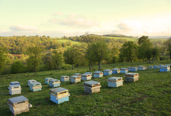

DIGITAL SOLUTIONS & AGRICULTURAL EXCELLENCE

Kenya Digital Agriculture Platform
AgriNova is a one-stop digital agriculture platform that connects farmers, agribusinesses, and agricultural professionals through innovative technology.
We provide practical knowledge, digital tools, and market opportunities that improve productivity, sustainability, and profitability.
Digital Solutions & Agricultural Excellence
Grow smarter, reach further, and unlock new opportunities through modern web technologies and Agricultural Economics expertise.
AgriNova bridges the gap between farmers and markets by combining digital innovation with practical agricultural solutions that improve productivity and income.
From farm planning to market access, our goal is to empower every farmer with reliable information and modern digital services.
Weather Forecasts
Access accurate weather forecasts and historical climate records to support informed farming decisions.
Weather insights help farmers plan planting, irrigation, harvesting, and pest management while minimizing climate-related risks.

Apiculture Farming